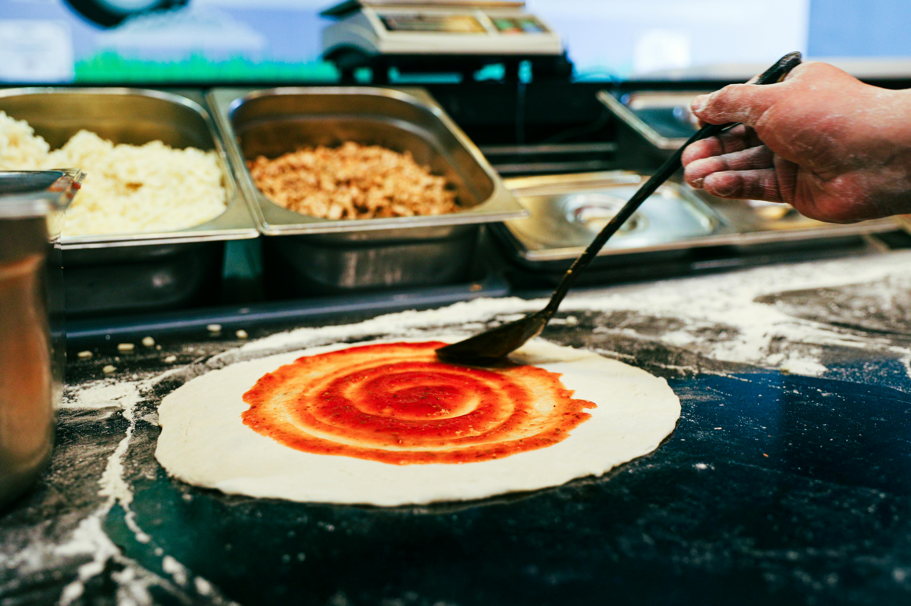
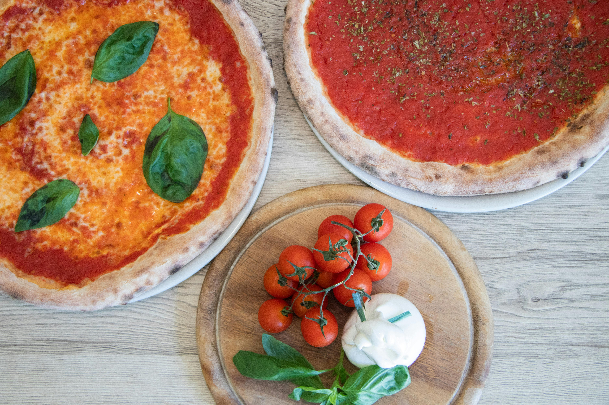

Aquest mes us proposem que seguiu la recepta del nostre amic Papá felice, creador de
contingut culinari al canal de Youtube.
En el següent vídeo, Papá felice ens proposa la creació de massa per cuinar tres pizzes. Cada pizza
tindrà ingredients diferents per tal de fer-ho més divertit.
En el video de Youtube teniu la llista dels ingredients que necessiteu.
Què són les pizzes d'estil napolità?
Les pizzes napolitanes són les pizzes de forma rodona i de massa tendra però amb vores altes. Segons la
Wiquipèdia, la primera documentació escrita que parla sobre les pizzes napolitanes es troba en els
escrits de Vicenzo Corrado del segle XVIII. Aquests escrits són un tractat sobre els hàbits alimentaris
de la ciutat de Nàpols. És gràcies a aquest tractat que es va donar l'inici de la reputació gastronòmica
de la zona. Aquestes mateixes observacions suposen la data de naixement de la pizza napolitana.

Un dels nostres pizzers preparant una pizza
Quines pizzes són tradicionals de Nàpols?
Les pizzes, i els seus ingredients, que es consideren tradicionals de Nàpols són:
La Margarita:
salsa de tomàquet, mozarella, buffala, albahaca i oli d'oliva
La Marinera:
salsa de tomàquet, mozarella, all, orenga i oli d'oliva
No obstant, hi ha variacions ja que actualment és difícil saber quines són originals i quines no. Això és
degut a que cada pizzeria ha anat creant les pizzes al seu gust amb el pas del temps. Tanmateix, es creu
que les següents pizzes són les que es consideren variants de les originals (els ingredients també poden
variar):
La Capritxosa
La Quatre estacions
La Quatre formatges
La Napolitana

Pizzes Margarita i Marinara
Associazione Verace Pizza Napoletana
L'any 1984 es va crear la Asociación Verace Pizza Napoletana (AVPN) amb seu legal i operativa, i sense
ànims de lucre, a la ciutat de Nàpols.
Segons la seva web: "Su misión es promover y tutelar, en Italia y en el mundo, la vera pizza napolitana,
es decir,
el producto típico realizado según las características descritas en el Disciplinario internacional para
la obtención
de la marca colectiva "Vera Pizza Napoletana", en vigor desde 1984 y redactada y registrada por la
AVPN".
Així doncs, us compartim la seva pàgina web on podreu veure que pertanyem, participem i produim pizzes
tradicionals napolitanes. També, veureu que ofereixen informació sobre l'associació, receptes, cursos,
entre d'altres.
El link de la web és el següent: Associazione Verace Pizza Napoletana